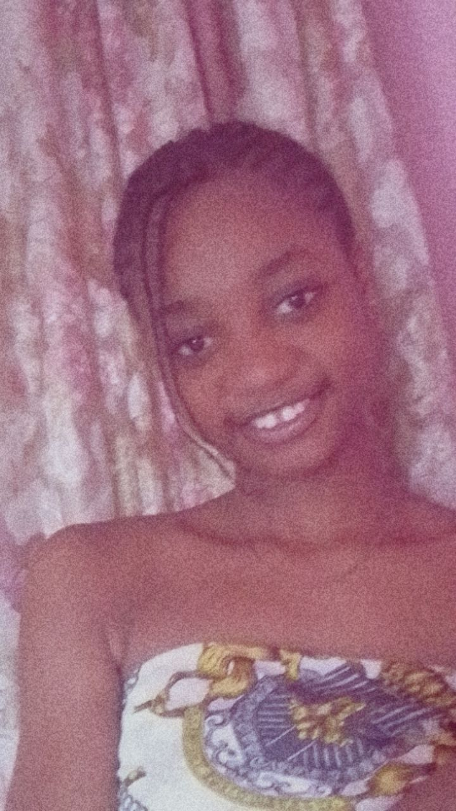

Homepage
Login
Register
About
Contact

ABOUT ME
Hello! My name is Ochai Mary widely known as Hadassah, and i am a passionate freelance graphic designer,a web developer and a photographer, my passion lies in using these skills to build and brand memorable digital experiences.
My mission as a freelance graphic designer is to help purpose-driven businesses tell their unique stories through thoughtful and impactful visual communication.
I believe that great design is not just about aesthetics—it's about solving problems and connecting with an audience on a deeper level. I've had the pleasure of working with a diverse range of clients, from local startups to international non-profits, helping them to build strong, recognizable brands.
As a web developer i create dynamic and responsive web applications. I thrive on turning complex problems into elegant, user-friendly solutions.I believe in writing clean, efficient code and am constantly exploring new technologies to stay at the forefront of the industry. My goal is to build digital products that not only function flawlessly but also provide an exceptional user experience. I am currently seeking opportunities to join a collaborative team where I can contribute my skills and continue to grow as a developer.
And finally as a photographer centered around capturing authentic moments and crafting visual narratives that tell a story. I specialize in [e.g., portrait, wedding, commercial, landscape or sports] photography, and my goal is to create images that are not just seen, but felt.
My journey began with a love for capturing the world around me, and it has evolved into a passion for connecting with people and places through the lens. I believe every individual, event, or product has a story to tell, and I'm dedicated to bringing that story to life with artistry and intention.